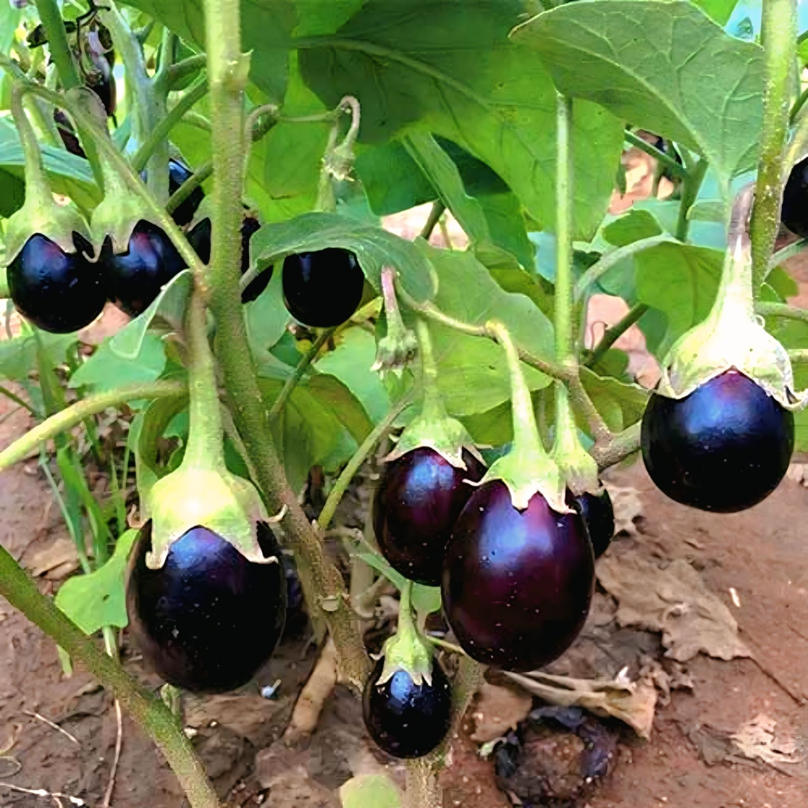
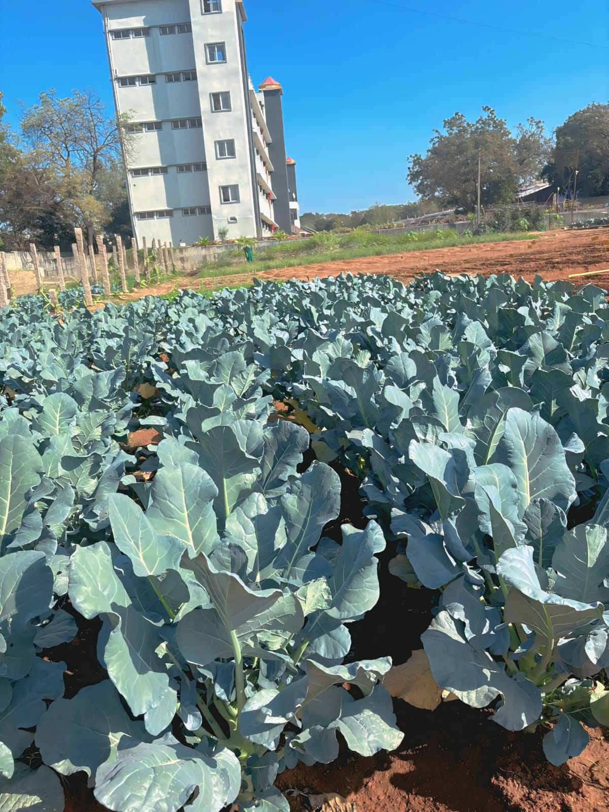
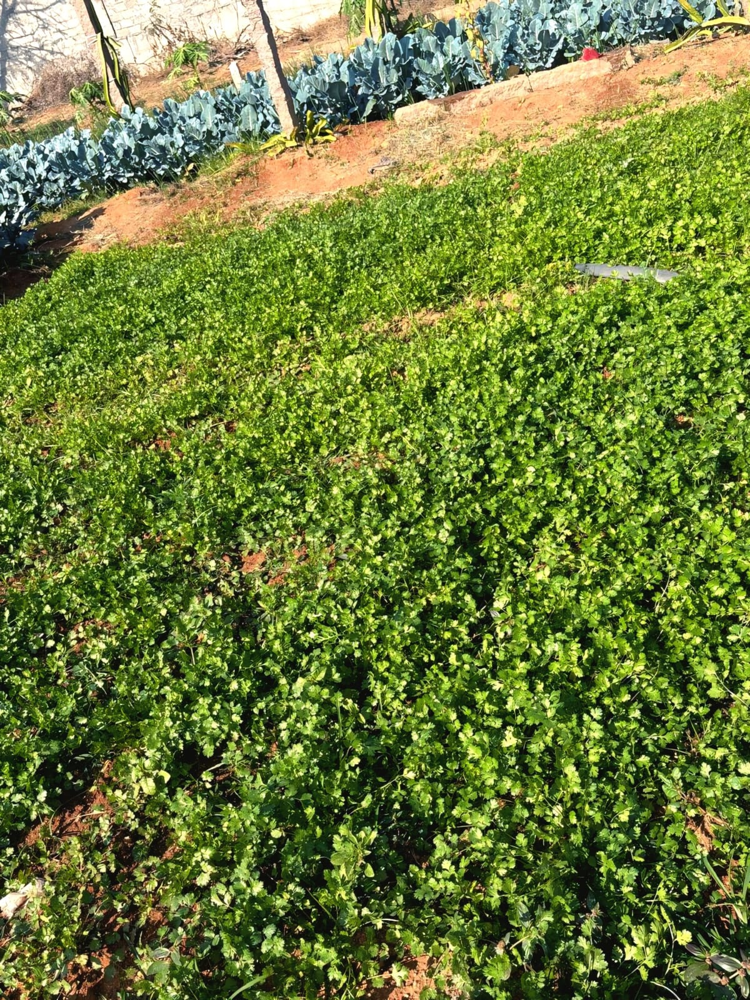
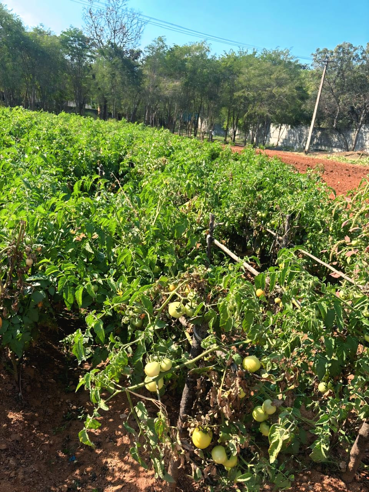

Brinjal / Eggplant
Scientific Name:Solanum melongena
Brinjal is a glossy purple vegetable widely used in Indian cuisine. It grows on small shrubs and is rich in fiber, vitamins, and antioxidants.

Cauliflower
Scientific Name: Brassica oleracea var. botrytis
Cauliflower is a cool-season vegetable grown for its edible white head called a curd. Its large bluish-green leaves protect the developing head from direct sunlight and help maintain freshness.

Coriander / Cilantro
Scientific Name: Coriandrum sativum
Coriander is a fragrant herb used in cooking for its fresh leaves and seeds. It is commonly added to curries, chutneys, and salads for extra flavor and aroma.

Spring Onion / Green Onion
Scientific Name: Allium fistulosum
Spring onions have long green leaves with small white bulbs and are widely used for flavoring dishes. They are easy to grow and contain antioxidants and vitamins beneficial for health.

Tomato
Scientific Name: Solanum lycopersicum
Tomato plants produce juicy fruits used in curries, sauces, salads, and soups. Tomatoes are rich in lycopene, vitamin C, and antioxidants that support good health

Ladies' Finger (Okra)
Scientific Name: Abelmoschus esculentus
A popular warm-season vegetable valued for its edible, elongated green seed pods. It is characterized by its slightly viscous texture when cooked and is highly regarded for being rich in dietary fiber, vitamins, and antioxidants.